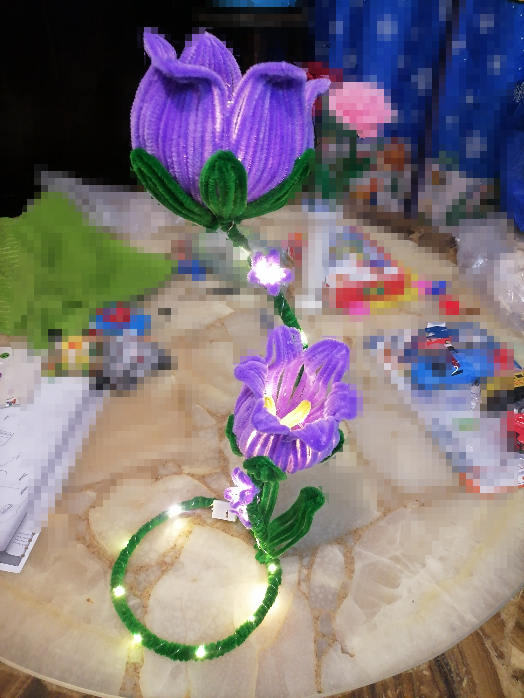
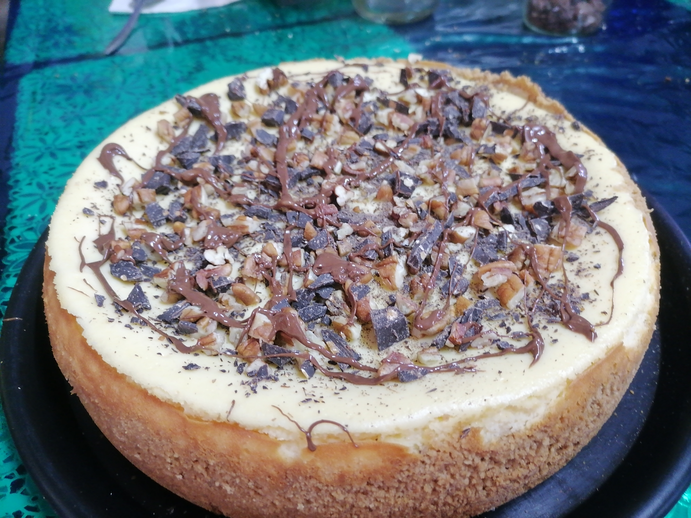
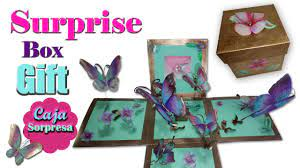
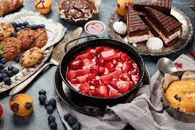

Hola mi nombre es Elsa soy enfermera pero amo hacer manualidades desde arreglos florales, cartas y cocinar también; trato de ser muy clara en los procedimientos e instrucciones, ya que cuando comencé en esto había muchas cosas que me llamaban la atención pero los procedimientos no siempre eran claros, así que aquí trato de que no ocurra eso, si aún asi tienes dudas para mi será un placer aclararlas.
Buscas sorprender a alguien con un detalle hecho con tus propias manos este es el lugar ideal.
Aquí encontraras diferentes proyectos que te enseñare a realizar para esa persona especial, desde arreglos como las famosa rosas eternas hechas con listón, hasta algún centro de mesa navideño.
Cansad@ de realizar cartas comúnes, no te preocupes aquí encontras desde cartas en 3D hasta cartas explosivas, o que cuando la habrán salgan mariposas!!
Si quieres prepararte para sorprender a cualquiera este es el lugar perfecto, encontras desde cosas fáciles preparadas de una manera diferente hasta platillos más elaborados.
Si lo que necesitas es una comida o aperitivo, aquí te damos diferentes ideas para que te luzcas como un profesional.
Pasteles, gelatinas, tartas es algo de lo que encontras aquí, y si el horno no es lo tuyo, no te preocupes, también hay opciones sin horno!!